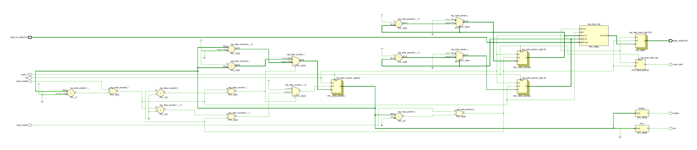

Métodos de Diseño Electrónico · Curso 2026-2027
Diego Orellana
Iñigo Zubieta
La FIFO (rtl/fifo.vhd) se ha simulado en Questa con el banco
testbench/tb_fifo.vhd (autocomprobado, 0 errores con depth 1, 2, 4 y 128),
se ha sintetizado en Design Compiler con class.db y se ha implementado en la
Basys 3 con Vivado. Datos de partida de la entrega (depth 4, width 16):
| Dato | Valor | Informe |
|---|---|---|
| Biestables (DC) | 88 (80 FD1 + 8 FD2) | registros.rpt / referencias.rpt |
| Latches (DC) | 0 | registros.rpt |
| Área total de celdas (DC) | 972 | area.rpt |
| Slack peor camino (DC, T = 10 ns) | +0,16 ns (MET) | timing.rpt |
| WNS en la Basys 3 (Vivado) | +6,102 ns, todas las restricciones cumplidas | timing_summary_routed |
| Block RAM en la Basys 3 | 0 (la memoria va en LUTRAM: 12 LUT as Memory) | utilization_placed |
Pregunta. Impleméntese la memoria FIFO en FPGA para un depth de 128 y un width de 16 bits. ¿Infiere la herramienta algún bloque de memoria RAM? En caso afirmativo, ¿se ve el uso de alguna primitiva similar en la síntesis de Design Compiler, para los mismos widths y depths?
Se ha cambiado FIFO_DEPTH a 128 en top_fifo_fpga.vhd y se ha vuelto a
implementar. Vivado infiere un bloque de RAM: una RAMB18E1 (media Block RAM tile) en modo
simple dual port (RAM_SDP), con un puerto de escritura y otro de lectura de 128x16.
La memoria ya no ocupa ningún LUT como memoria. El diseño cumple timing (WNS = +5,607 ns).
| Recurso (Vivado) | depth 4 | depth 128 |
|---|---|---|
| Block RAM Tile | 0 | 0,5 (1 RAMB18E1) |
| LUT as Memory | 12 (3 RAM32M: 18 RAMD32 + 6 RAMS32) | 0 |
| Slice LUTs | 706 | 707 |
| Slice Registers | 657 | 656 |
| WNS | +6,102 ns | +5,607 ns |
Lo infiere porque la memoria está descrita como lo que es una RAM síncrona: la escritura
en reg_array se hace en el flanco de reloj, con habilitación y sin reset, y la
lectura también se registra en el flanco (reg_data_read, con habilitación). Es la
plantilla que Vivado reconoce como Block RAM. Las Block RAM de la FPGA no tienen reset del
contenido, así que si la memoria llevara reset no se podría meter en ellas.
Con depth 4 (la entrega) la memoria es tan pequeña que Vivado prefiere la RAM distribuida (LUTRAM, primitivas RAM32M) en vez de gastar una Block RAM. Con 128 posiciones compensa la Block RAM y la LUTRAM desaparece.
Con los mismos parámetros (depth 128, width 16), DC no usa ningún bloque de memoria. La
librería class.db solo tiene celdas estándar (puertas y biestables) y ninguna
macro de memoria, así que construye la memoria con biestables y multiplexores:
| Dato (DC) | depth 4 | depth 128 |
|---|---|---|
| Biestables FD1 (sin reset) | 80 = 64 memoria + 16 data_read | 2064 = 2048 memoria + 16 data_read |
| Biestables FD2 (con reset) | 8 | 23 |
| Latches | 0 | 0 |
| Área total de celdas | 972 | 24.314 |
| Slack peor camino (T = 10 ns) | +0,16 ns (MET) | −1,37 ns (VIOLATED) |
Las 128 x 16 = 2048 posiciones de la memoria son 2048 biestables FD1, y la lectura es un
multiplexor 128 a 1 por cada bit hecho con puertas (la mayoría de las 2691 celdas AO4 de
referencias.rpt). El área se multiplica por 25 y el diseño ya no cumple los 10 ns:
el camino crítico va de reg_read_pointer_reg[1] a reg_data_read_reg[7],
es decir, atraviesa todo el multiplexor de lectura (llegada 10,57 ns frente a 9,15 ns de tiempo
requerido).
Para tener una RAM de verdad en un ASIC habría que generarla con un compilador de memorias de la tecnología e instanciar esa macro a mano; DC no la infiere a partir del VHDL.
Los informes con estos parámetros están en respuestas/pregunta1_depth128/
(design_compiler/ y vivado/).
Pregunta. Visto el comportamiento de la memoria FIFO, ¿es necesario llevar la señal reset_n a todos los elementos secuenciales del diseño? ¿En cuáles se puede prescindir de reset_n?
No. Solo necesitan reset los registros que deciden qué se puede hacer y qué se considera válido. El contenido de los datos no necesita reset.
| Registro | ¿Reset? | Por qué |
|---|---|---|
reg_data_counter | Sí | Define empty y full. Después del reset la FIFO tiene que estar vacía (0). |
reg_write_pointer, reg_read_pointer | Sí | Tienen que empezar iguales, si no el primer dato leído no sería el primero escrito. |
reg_read_valid | Sí | Sin reset podría salir un read_valid = '1' falso justo después del reset. |
reg_array (la memoria) | No | Una posición solo se lee después de escribirla: con el contador a 0 no se acepta ninguna lectura, así que lo que hubiera antes nunca sale. |
reg_data_read | No | data_read solo vale algo cuando read_valid = '1', y read_valid sí tiene reset. |
Así está hecho en fifo.vhd: p_array y p_data_read solo
tienen reloj. En la síntesis de DC se ve en los biestables: 8 FD2 (con clear asíncrono:
3 del contador, 2 + 2 de los punteros y 1 de read_valid) y 80 FD1 sin reset (64 de la memoria y
16 de data_read). Con depth 128 son 23 FD2 (8 + 7 + 7 + 1) y 2064 FD1.
Quitar el reset donde no hace falta tiene dos ventajas. La primera es el área: en
class.db un FD1 ocupa 7 y un FD2 ocupa 9, así que con depth 4 se ahorran
80 x 2 = 160 unidades, y con depth 128 más de 4000. La segunda es que en la FPGA permite
inferir RAM (pregunta 1): las LUTRAM y las Block RAM no se pueden poner a cero con un reset, y
si la memoria llevara reset Vivado tendría que hacerla con biestables.
El banco de pruebas lo confirma: en el caso 8 se hace un reset con datos dentro de la FIFO y después no sale ningún dato antiguo, porque el contador y read_valid vuelven a 0 aunque la memoria conserve su contenido.
Esquemático RTL elaborado por Vivado para depth 4 y width 16 (también en
respuestas/diagrama_rtl_fifo.pdf). Se ven los dos punteros con su sumador y el
multiplexor de vuelta a 0, el contador con su sumador y restador, la memoria
(RTL_RAM) con escritura por reg_write_pointer y lectura por
reg_read_pointer, los registros de salida reg_data_read y
reg_read_valid, y las comparaciones que dan empty y full.

Hay dos bancos de pruebas en testbench/, los dos simulados en Questa.
Reproduce el cronograma del apartado 2.2 con una FIFO de profundidad 2: mete las mismas
entradas ciclo a ciclo y, a mitad de cada ciclo, compara las salidas y la ocupación con la
figura. Los 9 ciclos coinciden. La tabla sale de sim/out/cronograma.txt:
| ciclo | write_enable | data_to_write | read_enable | data_read | read_valid | empty | full | ocupación | nota |
|---|---|---|---|---|---|---|---|---|---|
| 0 | 0 | – | 0 | – | 0 | 1 | 0 | 0 | |
| 1 | 1 | 11 | 0 | – | 0 | 1 | 0 | 0 | |
| 2 | 1 | 22 | 0 | – | 0 | 0 | 0 | 1 | |
| 3 | 1 | 33 | 0 | – | 0 | 0 | 1 | 2 | escritura descartada (llena) |
| 4 | 0 | – | 1 | – | 0 | 0 | 1 | 2 | |
| 5 | 1 | 44 | 1 | 11 | 1 | 0 | 0 | 1 | lectura y escritura a la vez |
| 6 | 0 | – | 1 | 22 | 1 | 0 | 0 | 1 | |
| 7 | 0 | – | 1 | 44 | 1 | 1 | 0 | 0 | lectura descartada (vacía) |
| 8 | 0 | – | 0 | – | 0 | 1 | 0 | 0 |
«–» indica que el valor no importa: data_read solo es válido con read_valid = '1'. La lectura pedida en el ciclo 4 entrega su dato en el ciclo 5, como en el enunciado.
Lleva un modelo de la FIFO dentro del banco y en cada flanco compara empty, full, read_valid y data_read del DUT con el modelo. Prueba: lectura con la FIFO vacía, llenado y escritura de más, petición simultánea con la FIFO llena, vaciado y lectura de más, petición simultánea con la FIFO vacía, peticiones simultáneas en un punto intermedio, reset con datos dentro y 5000 ciclos de peticiones aleatorias. Resultado: 0 errores con depth 1, 2, 4 y 128 (con depth 4: 2210 escrituras y 2207 lecturas atendidas; 348 escrituras y 332 lecturas descartadas correctamente).